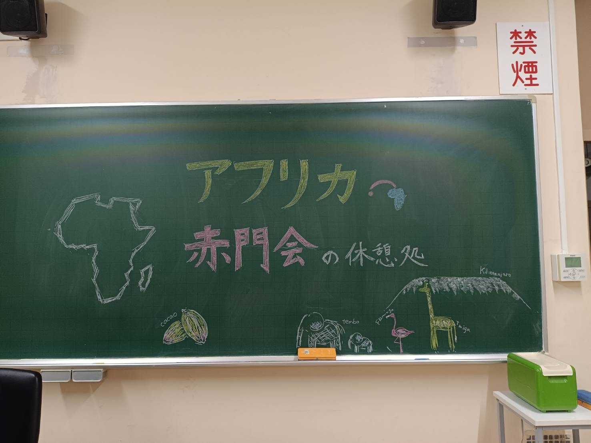
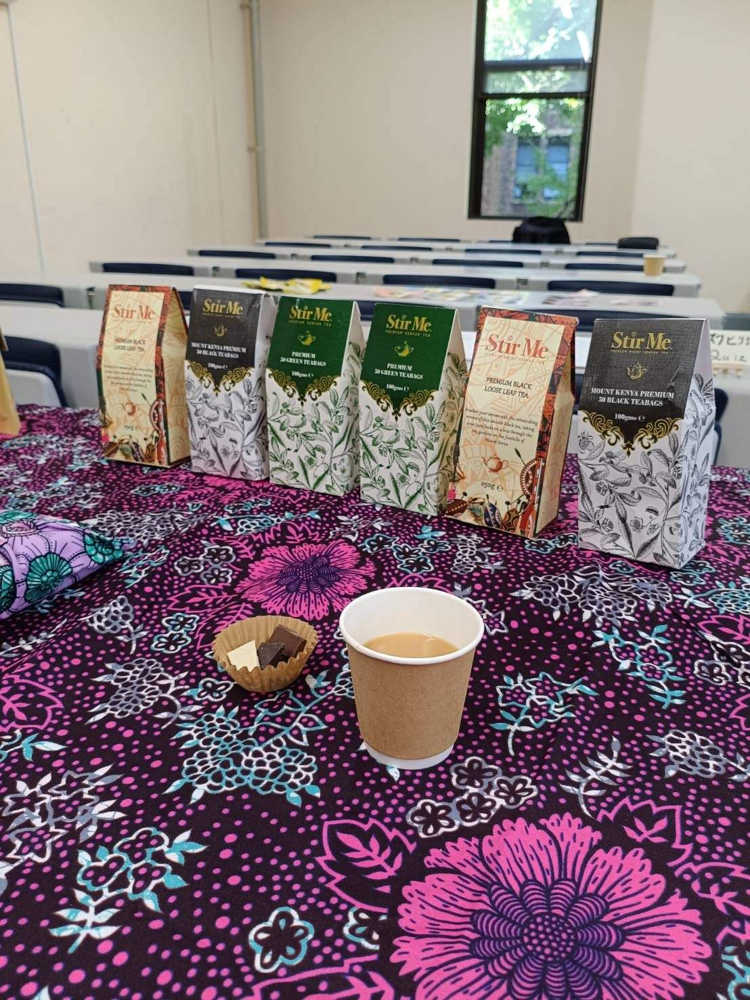
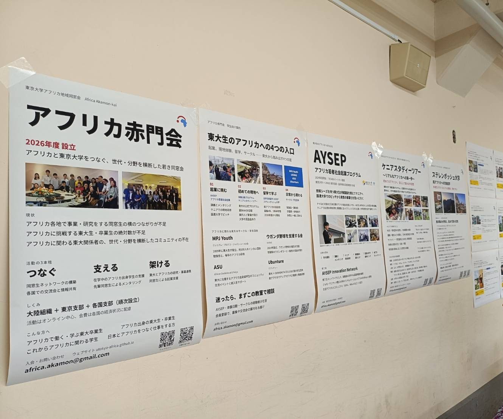
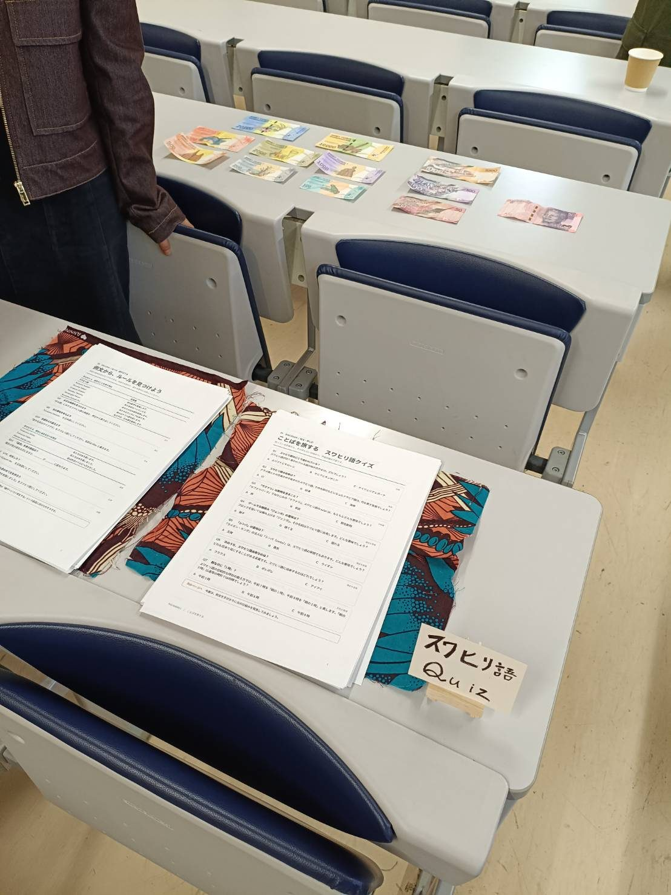

News
Africa Akamonkai Rest Stop at the University of Tokyo Homecoming Day 2026
On Saturday, 17 October 2026, Africa Akamonkai took part in the University of Tokyo Homecoming Day for the first time and opened the Africa Akamonkai Rest Stop in Room 214 of the Faculty of Law and Letters Building No. 1 on Hongo Campus. Africa-related programs at UTokyo had taken part individually before, but this was the first time these initiatives exhibited together as one.

We covered the tables with African print fabric and welcomed visitors with a chalk drawing of the African continent, Kilimanjaro, a giraffe and elephants.
Kenyan tea and Nigerian chocolate
The Rest Stop served Kenyan tea and Nigerian chocolate. The chocolate is bean-to-bar, made in Nigeria from the cacao bean to the finished bar, and is rarely found in Japan.

Visitors were welcome whether or not they ordered anything, and many sat down for a relaxed chat with members. Most of the staff were students and recent graduates, and conversations across generations grew naturally with the visitors.
Introducing Africa-related activities at UTokyo
Posters on the classroom wall introduced the ways UTokyo students can get involved with Africa.
- AYSEP (Africa Youth Social Entrepreneurship Program): UTokyo students with business ideas take part in field training and pitches in Kenya
- Kenya Study Tour (Experiential Activity Program): an official UTokyo program for students visiting Africa for the first time
- Stellenbosch University through USTEP: a university-wide exchange to South Africa that began in academic year 2026
- Student groups: MPJ Youth, UGBAS (a group supporting baseball in Uganda), ASU (African Students at UTokyo) and Ubunture
Members with experience in these programs and groups were in the room to talk with visitors about how to get involved at any stage. Banknotes from across Africa were also on display.

Swahili quiz
Visitors also tried our Swahili quiz, “A Journey Through Words.” Using multiple-choice questions, they worked out the meaning of Swahili words, widely spoken in East Africa, and how time is counted in the language.

Connecting with a new alumni association
Throughout the day, people from inside and outside the university who are interested in Africa, or in our newly founded alumni association, stopped by to talk with us. We look forward to building on these new connections.
For more about Homecoming Day, please visit the official University of Tokyo Homecoming Day website.
We sincerely thank everyone who visited and everyone who helped run the Rest Stop. Africa Akamonkai welcomes UTokyo graduates working or studying in Africa and students who are about to engage with Africa. Please use the membership form to join, or reach us through the contact details.